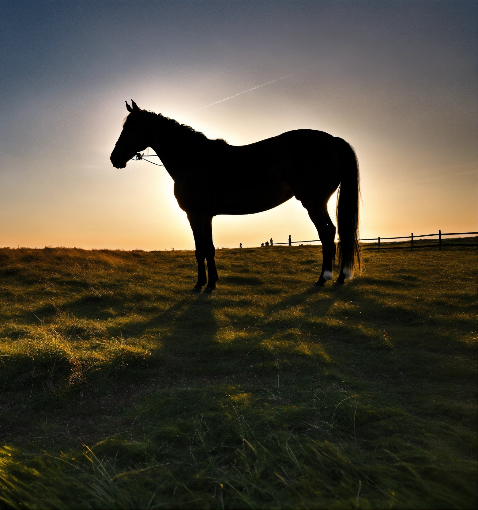

Diversão Garantida
Explora os nossos jogos e diverte-te enquanto aprendes sobre os animais e a natureza
Curiosidades
Aprende Curiosidades incríveis sobre os animais da quinta.

Colorir e ouvir
Pinta os animais e descobre os sons que eles fazem.

Jogo das Sombras
Tenta adivinhar os animais através das sombras!